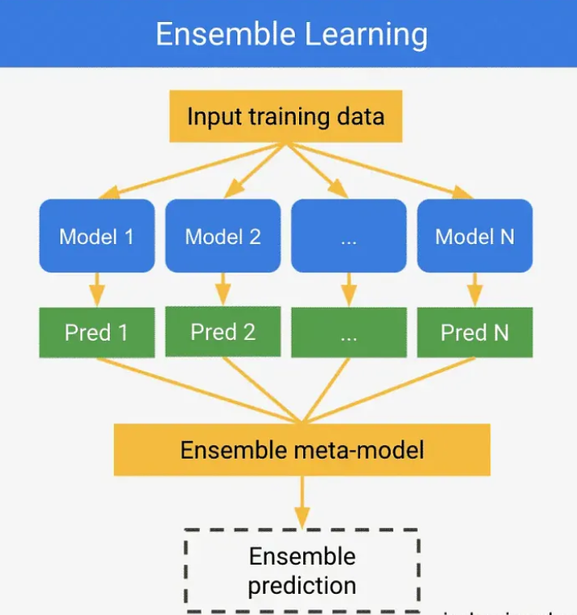

1. Analisis Penelitian dan Implementasi Sistem Klasifikasi Varietas Anggur(Wine)#
Link menuju website yang sudah kami buat atau hosting :
Untuk Klasifikasi Gaussian Naive Bayes: https://adisahrul123.pythonanywhere.com/
Tujuan Analisis dan Implementasi Sistem Klasifikasi Varietas Anggur untuk Industri Pabrik Wine#
Tujuan dari penggunaan dataset “Wine” adalah untuk mengembangkan sistem klasifikasi yang akurat dan efisien guna menyortir varietas anggur secara otomatis di pabrik wine. Sistem ini akan menggunakan analisis kimiawi untuk mengidentifikasi dan mengklasifikasikan anggur ke dalam salah satu dari tiga varietas yang berbeda. Implementasi sistem klasifikasi ini diharapkan dapat memberikan manfaat sebagai berikut:
Berikut adalah manfaat dari penggunaan sistem klasifikasi varietas anggur untuk pabrik industri wine:
Peningkatan Efisiensi Produksi: Mengotomatisasi penyortiran anggur untuk mengurangi waktu dan tenaga kerja manual.
Kontrol Kualitas Lebih Baik: Memastikan konsistensi dan kualitas produk sesuai standar varietas anggur.
Autentikasi dan Pencegahan Penipuan: Mengautentikasi varietas anggur untuk menjaga kepercayaan konsumen dan integritas merek.
Optimasi Proses Produksi: Menggunakan data kimia untuk mengembangkan dan meningkatkan profil rasa anggur.
Penghematan Biaya: Mengurangi biaya tenaga kerja dan kesalahan manusia, serta mengurangi variabilitas produksi.
Secara keseluruhan, tujuan dari pengembangan sistem klasifikasi varietas anggur menggunakan dataset “Wine” adalah untuk memberikan solusi teknologi yang inovatif bagi pabrik wine, meningkatkan efisiensi, kualitas, dan konsistensi produk, serta mendukung pertumbuhan bisnis melalui optimasi proses dan penghematan biaya.
Apa Itu Wine?#
Wine, atau anggur, adalah minuman beralkohol yang telah dinikmati oleh manusia selama ribuan tahun. Proses pembuatannya dimulai dengan pemilihan buah anggur yang matang. Anggur ini kemudian diperas untuk mengeluarkan jusnya. Dalam pembuatan wine merah, kulit anggur juga dibiarkan bersama jus selama fermentasi untuk memberikan warna dan karakteristik rasa yang khas.
Fermentasi adalah inti dari pembuatan wine, di mana ragi (yeast) mengubah gula dalam jus anggur menjadi alkohol dan karbon dioksida. Proses ini bisa berlangsung dari beberapa hari hingga beberapa minggu, tergantung pada jenis wine yang dibuat. Setelah fermentasi, wine sering kali disimpan dalam tong kayu atau tangki stainless steel untuk pematangan, yang bisa berlangsung dari beberapa bulan hingga beberapa tahun. Selama pematangan, wine mengembangkan kompleksitas rasa dan aroma.
Ada berbagai jenis wine, masing-masing dengan karakteristik uniknya:
Wine Merah dibuat dari anggur merah atau hitam dengan kulitnya, memberikan warna yang kaya dan tanin.
Wine Putih biasanya dibuat dari anggur putih atau anggur merah tanpa kulit, menghasilkan minuman yang lebih ringan dan segar.
Rosé adalah wine merah yang difermentasi sebentar dengan kulit anggur, memberikan warna merah muda.
Sparkling Wine seperti Champagne, memiliki gelembung karbon dioksida alami yang memberikan sensasi berbuih.
Dessert Wine manis dengan kadar gula yang lebih tinggi, sering kali disajikan sebagai penutup.
Wine tidak hanya sekedar minuman, tetapi juga bagian dari tradisi dan budaya di banyak negara. Setiap wilayah memiliki cara unik dalam membuat dan menikmati wine, dari kebun anggur di Prancis dan Italia hingga kilang anggur di California dan Australia. Wine juga sering kali dikaitkan dengan perayaan, makan malam istimewa, dan momen-momen penting dalam kehidupan.
Selain sebagai minuman sosial, wine dalam jumlah moderat diketahui memiliki beberapa manfaat kesehatan, seperti peningkatan kesehatan jantung. Namun, penting untuk mengonsumsinya dengan bijak karena konsumsi berlebihan dapat menyebabkan masalah kesehatan.
Secara keseluruhan, wine adalah hasil dari perpaduan antara seni dan sains, mencerminkan tradisi yang kaya dan dedikasi para pembuatnya yang selalu mencari cara untuk menciptakan rasa dan aroma yang sempurna.
Setelah memahami definisi wine, proses pembuatannya, serta berbagai kegunaannya dalam industri dan budaya, kita sekarang siap untuk melangkah ke tahap berikutnya dalam analisis data kita, yaitu pemahaman data (data understanding). Pada tahap ini, kita akan mendalami dataset “Wine” dari UCI Machine Learning Repository, menganalisis struktur dan konten data, mengidentifikasi pola dan karakteristik penting, serta mempersiapkan data untuk analisis lebih lanjut. Tahap ini penting untuk memastikan bahwa kita memiliki pemahaman yang mendalam dan akurat tentang data yang kita miliki sebelum melakukan proses pemodelan dan interpretasi hasil.
2. Data Understanding / Memahami data kismis#
Data understanding adalah salah satu tahapan dalam proses analisis data yang bertujuan untuk memahami data yang akan diolah sebelum langkah-langkah analisis lebih lanjut dilakukan. Dalam tahap ini, fokus utamanya adalah untuk mengumpulkan informasi tentang data, mengeksplorasi karakteristiknya, dan memahami konteksnya. Pada Analisis kali ini case kita yakni memahami datasets Raisin namun sebelumnya kita harus mengambil datasets dulu supaya data itu pasti apa yang akan kita pahami dan lakukan proses klasifikasi.
Pengumpulan Data#
Mencari Datasets#
Langkah pertama pada pegumpulan data adalah dengan mencari dataset yang akan kita gunakan, sesuai penjelasan di atas kita akan menggunakan Dataset Wine yang bersumber dari UCI Datasets :
Sumber Datasets Wine : https://archive.ics.uci.edu/dataset/109/wine
Mengambil dan Menampilkan Datasets#
Setelah menentukan Datasets langkah selanjutnya yakni menampilkan atau mengambil datasets tersebut.
from ucimlrepo import fetch_ucirepo
# Mengambil dataset Wine dari UCI Repository
wine = fetch_ucirepo(id=109)
# Menampilkan metadata dataset
print("Metadata:")
print(wine.metadata)
# Menampilkan informasi variabel (fitur dan target)
print("\nInformasi Variabel:")
print(wine.variables)
# Memisahkan fitur (X) dan target (y)
X = wine.data.features
y = wine.data.targets
# Contoh untuk menunjukkan bagaimana mengakses X dan y:
print("\nContoh data fitur (X):")
print(X.head())
print("\nContoh data target (y):")
print(y.head())
!pip install ucimlrepo
from ucimlrepo import fetch_ucirepo
wine = fetch_ucirepo(id=109)
# data (as pandas dataframes)
X = wine.data.features
y = wine.data.targets
df_wine = X.join(y)
df_wine.to_csv("wine.csv", index=False)
#variable features
print(df_wine)
Requirement already satisfied: ucimlrepo in /root/venv/lib/python3.11/site-packages (0.0.7)
Requirement already satisfied: pandas>=1.0.0 in /shared-libs/python3.11/py/lib/python3.11/site-packages (from ucimlrepo) (2.1.4)
Requirement already satisfied: certifi>=2020.12.5 in /shared-libs/python3.11/py/lib/python3.11/site-packages (from ucimlrepo) (2023.7.22)
Requirement already satisfied: numpy<2,>=1.23.2 in /shared-libs/python3.11/py/lib/python3.11/site-packages (from pandas>=1.0.0->ucimlrepo) (1.26.1)
Requirement already satisfied: python-dateutil>=2.8.2 in /shared-libs/python3.11/py-core/lib/python3.11/site-packages (from pandas>=1.0.0->ucimlrepo) (2.8.2)
Requirement already satisfied: pytz>=2020.1 in /shared-libs/python3.11/py/lib/python3.11/site-packages (from pandas>=1.0.0->ucimlrepo) (2023.3.post1)
Requirement already satisfied: tzdata>=2022.1 in /shared-libs/python3.11/py/lib/python3.11/site-packages (from pandas>=1.0.0->ucimlrepo) (2024.1)
Requirement already satisfied: six>=1.5 in /shared-libs/python3.11/py-core/lib/python3.11/site-packages (from python-dateutil>=2.8.2->pandas>=1.0.0->ucimlrepo) (1.16.0)
[notice] A new release of pip is available: 23.1.2 -> 24.0
[notice] To update, run: pip install --upgrade pip
Alcohol Malicacid Ash Alcalinity_of_ash Magnesium Total_phenols \
0 14.23 1.71 2.43 15.6 127 2.80
1 13.20 1.78 2.14 11.2 100 2.65
2 13.16 2.36 2.67 18.6 101 2.80
3 14.37 1.95 2.50 16.8 113 3.85
4 13.24 2.59 2.87 21.0 118 2.80
.. ... ... ... ... ... ...
173 13.71 5.65 2.45 20.5 95 1.68
174 13.40 3.91 2.48 23.0 102 1.80
175 13.27 4.28 2.26 20.0 120 1.59
176 13.17 2.59 2.37 20.0 120 1.65
177 14.13 4.10 2.74 24.5 96 2.05
Flavanoids Nonflavanoid_phenols Proanthocyanins Color_intensity Hue \
0 3.06 0.28 2.29 5.64 1.04
1 2.76 0.26 1.28 4.38 1.05
2 3.24 0.30 2.81 5.68 1.03
3 3.49 0.24 2.18 7.80 0.86
4 2.69 0.39 1.82 4.32 1.04
.. ... ... ... ... ...
173 0.61 0.52 1.06 7.70 0.64
174 0.75 0.43 1.41 7.30 0.70
175 0.69 0.43 1.35 10.20 0.59
176 0.68 0.53 1.46 9.30 0.60
177 0.76 0.56 1.35 9.20 0.61
0D280_0D315_of_diluted_wines Proline class
0 3.92 1065 1
1 3.40 1050 1
2 3.17 1185 1
3 3.45 1480 1
4 2.93 735 1
.. ... ... ...
173 1.74 740 3
174 1.56 750 3
175 1.56 835 3
176 1.62 840 3
177 1.60 560 3
[178 rows x 14 columns]
Jadi, kode tersebut digunakan untuk mengambil dataset “Wine” dari UCI Machine Learning Repository, memisahkan fitur-fiturnya dan target variabelnya, menggabungkannya menjadi satu DataFrame, menyimpan DataFrame tersebut ke dalam file CSV, dan mencetak DataFrame tersebut. Data diatas akan kita gunakan untuk Analisis Kasus kali ini, maka sebelum kita melakukan proses selanjutnya kita harus memahami datasets tersebut di mana tujuannya adalah untuk mengklasifikasikan sampel anggur menjadi salah satu dari beberapa varietas. Dataset ini secara khusus dapat digunakan untuk mengidentifikasi varietas anggur berdasarkan beberapa fitur kimia yang terkait dengan setiap jenis anggur.
Memahami Data#
Deskripsi Penjelasan datasets, Dataset “Wine” dari UCI Machine Learning Repository terdiri dari 178 instance dengan 13 atribut input yang mencakup Alcohol, Malic acid, Ash, Alcalinity of ash, Magnesium, Total phenols, Flavanoids, Nonflavanoid phenols, Proanthocyanins, Color intensity, Hue, OD280/OD315 of diluted wines, dan Proline. Atribut-atribut ini adalah data numerik dalam bentuk floating point, yang mencerminkan berbagai komponen kimia dalam wine yang dapat mempengaruhi karakteristik sensorik dan kualitasnya. Selain itu, terdapat satu atribut output kategorikal, yaitu Class, yang memiliki tiga nilai kelas: 1, 2, atau 3, mewakili varietas anggur yang berbeda. Dataset ini dikumpulkan oleh Riccardo Leardi (riclea@anchem.unige.it) dan biasanya digunakan untuk tujuan klasifikasi, di mana tujuan utamanya adalah untuk mengembangkan model machine learning yang dapat mengenali dan membedakan varietas anggur berdasarkan profil kimia yang terukur. Atribut-atribut yang terdapat dalam dataset ini meliputi:
Fitur-fitur Dan Class Datasets:
Alcohol:
Deskripsi: Persentase volume alkohol dalam wine. Alkohol adalah komponen utama yang berkontribusi pada kekuatan dan karakteristik sensorik wine. Tingkat alkohol yang tepat dapat mempengaruhi rasa, aroma, dan keseimbangan keseluruhan wine.
Tipe Data: Numerik (Continues)
Malic acid:
Deskripsi: Konsentrasi asam malat, salah satu asam organik utama dalam anggur. Asam malat memberikan rasa asam atau tajam pada wine. Selama proses fermentasi malolaktik, asam malat dapat diubah menjadi asam laktat yang lebih lembut, mengurangi keasaman dan menciptakan wine yang lebih lembut.
Tipe Data: Numerik (Continues)
Ash:
Deskripsi: Jumlah abu yang tersisa setelah pembakaran anggur. Ini mengindikasikan kandungan mineral dalam wine. Kandungan abu yang tepat dapat mempengaruhi rasa dan kestabilan wine.
Tipe Data: Numerik (Continues)
Alcalinity of ash:
Deskripsi: Tingkat kealkalian abu, mengukur kapasitas basa dalam wine. Tingkat kealkalian yang tinggi dapat mempengaruhi pH wine dan akhirnya mempengaruhi rasa serta umur simpan wine.
Tipe Data: Numerik (Continues)
Magnesium:
Deskripsi: Kandungan magnesium dalam wine, yang merupakan mineral penting. Magnesium berperan dalam proses fermentasi dan dapat mempengaruhi rasa serta kestabilan wine.
Tipe Data: Numerik (Integer)
Total phenols:
Deskripsi: Jumlah keseluruhan fenol dalam wine. Fenol adalah senyawa yang berkontribusi pada rasa, warna, dan sifat antioksidan wine. Total fenol mencakup flavonoid dan nonflavonoid fenol.
Tipe Data: Numerik (Continues)
Flavanoids:
Deskripsi: Jumlah flavonoid, sekelompok senyawa fenolik yang mempengaruhi warna, rasa, dan sifat antioksidan wine. Flavonoid juga berperan dalam astringensi dan umur simpan wine.
Tipe Data: Numerik (Continues)
Nonflavanoid phenols:
Deskripsi: Jumlah fenol nonflavonoid dalam wine. Fenol nonflavonoid juga mempengaruhi rasa dan karakteristik sensorik wine, meskipun dalam kadar yang berbeda dibandingkan flavonoid.
Tipe Data: Numerik (Continues)
Proanthocyanins:
Deskripsi: Jumlah proantosianidin, senyawa fenolik yang berkontribusi pada warna dan astringensi wine. Proantosianidin berasal dari kulit, biji, dan batang anggur.
Tipe Data: Numerik (Continues)
Color intensity:
Deskripsi: Intensitas warna wine, yang diukur berdasarkan kegelapan warna wine. Intensitas warna dapat memberikan indikasi tentang kekayaan fenol dan umur wine.
Tipe Data: Numerik (Continues)
Hue:
Deskripsi: Hue atau rona warna wine, yang menggambarkan kualitas dan nuansa warna wine. Hue memberikan informasi tentang kondisi penuaan dan proses oksidasi wine.
Tipe Data: Numerik (Continues)
OD280/OD315 of diluted wines:
Deskripsi: Rasio penyerapan ultraviolet pada panjang gelombang 280 nm dan 315 nm. Rasio ini merupakan indikator jumlah fenol dalam wine dan sering digunakan untuk menilai kualitas wine.
Tipe Data: Numerik (Continues)
Proline:
Deskripsi: Kandungan proline, asam amino yang berkontribusi pada aroma dan rasa wine. Proline juga berperan dalam reaksi Maillard selama penuaan, yang mempengaruhi karakteristik aroma dan rasa.
Tipe Data: Numerik (Continues)
Class:
Deskripsi: Kategori atau jenis wine yang menunjukkan varietas wine. Angka 1, 2, dan 3 masing-masing mewakili tiga varietas anggur yang berbeda dari wilayah yang sama di Italia.
Tipe Data: Kategorikal (Integer)
Perbedaan & Penjelasan 3 Kategorikal Varietas Wine:
Varietas pertama: dalam dataset ini menonjol dengan kandungan alkohol yang lebih tinggi serta jumlah fenol dan flavonoid yang signifikan. Wine dari varietas ini cenderung memiliki rasa yang kuat dan kompleks, dengan aroma yang kaya dan tekstur yang mendalam. Kandungan fenol yang tinggi memberikan wine warna yang lebih dalam dan tajam, sementara alkohol yang lebih tinggi memberikan kesan struktural yang kuat. Perbedaan ini menunjukkan bahwa varietas pertama ini sering kali dianggap sebagai yang paling berani dan penuh karakter di antara ketiga varietas, dengan ciri khas yang mendalam dan berlapis-lapis dalam setiap tegukan.
Varietas kedua: ditandai dengan tingkat keasaman yang lebih tinggi, karena konsentrasi malic acid yang signifikan. Wine dari varietas ini biasanya lebih segar dengan rasa yang tajam dan menyegarkan. Meskipun memiliki kandungan fenol yang sedikit lebih rendah dibandingkan varietas pertama, varietas kedua tetap memberikan kompleksitas yang menarik, dengan nuansa buah yang lebih cerah dan keasaman yang seimbang.
Varietas ketiga: menonjol dengan kandungan mineral seperti magnesium dan proline yang lebih tinggi. Hal ini menciptakan wine dengan aroma yang lebih kompleks dan rasa yang lebih halus serta seimbang. Wine dari varietas ini sering kali memiliki karakteristik aroma yang unik, dengan sentuhan mineral dan buah yang terintegrasi secara elegan. Perbedaan ini menunjukkan bahwa varietas ketiga menawarkan pengalaman sensorik yang berbeda, dengan fokus pada keseimbangan dan kompleksitas rasa yang menyeluruh.
Secara keseluruhan, ketiga varietas anggur ini memberikan kontribusi unik pada spektrum rasa dan aroma wine, mencerminkan perbedaan dalam komposisi kimia mereka yang mempengaruhi karakteristik akhir dari wine yang dihasilkan. Pemahaman mendalam tentang perbedaan ini penting untuk mengenali dan mengapresiasi berbagai varietas wine serta memahami bagaimana mereka dapat dipilah dan dianalisis dalam konteks industri wine.
Explore / Mengetahui Kualitas Datasets Wine dan memahami#
Dari Explore data wine yang kita dapatkan informasi mengenai tiga varietas anggur yang berasal dari wilayah yang sama di Italia. Setiap dataset terdiri dari 178 instance dengan 13 atribut input yang mencakup berbagai komponen kimia seperti Alcohol, Malic acid, dan Flavanoids. Atribut-atribut ini berupa data numerik dalam bentuk floating point yang merepresentasikan karakteristik kimia dari masing-masing sample wine. Selain itu, terdapat satu atribut output kategorikal, yaitu Class, yang memiliki tiga nilai kelas: 1, 2, atau 3, yang mengidentifikasi varietas anggur yang berbeda. Setelah kita menampilkan data dan mengetahui Penjelasan dari pemahaman fitur dari datasets tersebut kita bisa menampilkan Lebih secara rinci informasi atau pemahaman dari dataset Wine tersebut. selanjutnya untuk memahami dan mengetahui lebih dalam, kita detail kan untuk Spesifikasi atau fitur dan Class yang ada pada datasets, seperti mengetahui tipe data nya, mengetahui jumlah data nya, jumlah fitur dan classnya. Dibawah ini adalah Spesifikasi Detail dari datasets.
Jumlah Data Fitur dan Tipe Data#
df_wine.info()
<class 'pandas.core.frame.DataFrame'>
RangeIndex: 178 entries, 0 to 177
Data columns (total 14 columns):
# Column Non-Null Count Dtype
--- ------ -------------- -----
0 Alcohol 178 non-null float64
1 Malicacid 178 non-null float64
2 Ash 178 non-null float64
3 Alcalinity_of_ash 178 non-null float64
4 Magnesium 178 non-null int64
5 Total_phenols 178 non-null float64
6 Flavanoids 178 non-null float64
7 Nonflavanoid_phenols 178 non-null float64
8 Proanthocyanins 178 non-null float64
9 Color_intensity 178 non-null float64
10 Hue 178 non-null float64
11 0D280_0D315_of_diluted_wines 178 non-null float64
12 Proline 178 non-null int64
13 class 178 non-null int64
dtypes: float64(11), int64(3)
memory usage: 19.6 KB
Bisa kita ketahui dari hasil output code tersebut dalam datasets terdapat 178 data masing-masing 13 Features dan 1 Class disana juga mengecek tipedata dari setiap Kolom atau fiturnya.
Jumlah Data Dari Datasets Wine#
num_data = df_wine.shape[0]
print("Jumlah data dalam dataset Wine:", num_data)
Jumlah data dalam dataset Wine: 178
Diatas sudah bisa kita ketahui bahwa datasets record nya sebanyak 178 data.
Jumlah Class pada data / Kategori setiap Class#
Jadi kita melakukan pengecekan terhadap data Wine berpakah masing masing Class atau kategori dari 3 Kategori yakni Class 1, Class 2, dan Class 3. Dibawah ini adalah code untuk menampilkannya.
df_wine.groupby('class').size()
class
1 59
2 71
3 48
dtype: int64
Seperti hasil output diatas menghasilkan masing-masing Class Kategorinya menghasilkan data per Kategorinya.
Class 1 = 59 Data Record .
Class 2= 71 Data Record.
Class 3= 48 Data Record.
Deskripsi Datasets#
# Deskripsi Dari Datasets Wine
des = df_wine.describe()
print("Deskripsi Data Wine:")
print(des)
Deskripsi Data Wine:
Alcohol Malicacid Ash Alcalinity_of_ash Magnesium \
count 178.000000 178.000000 178.000000 178.000000 178.000000
mean 13.000618 2.336348 2.366517 19.494944 99.741573
std 0.811827 1.117146 0.274344 3.339564 14.282484
min 11.030000 0.740000 1.360000 10.600000 70.000000
25% 12.362500 1.602500 2.210000 17.200000 88.000000
50% 13.050000 1.865000 2.360000 19.500000 98.000000
75% 13.677500 3.082500 2.557500 21.500000 107.000000
max 14.830000 5.800000 3.230000 30.000000 162.000000
Total_phenols Flavanoids Nonflavanoid_phenols Proanthocyanins \
count 178.000000 178.000000 178.000000 178.000000
mean 2.295112 2.029270 0.361854 1.590899
std 0.625851 0.998859 0.124453 0.572359
min 0.980000 0.340000 0.130000 0.410000
25% 1.742500 1.205000 0.270000 1.250000
50% 2.355000 2.135000 0.340000 1.555000
75% 2.800000 2.875000 0.437500 1.950000
max 3.880000 5.080000 0.660000 3.580000
Color_intensity Hue 0D280_0D315_of_diluted_wines Proline \
count 178.000000 178.000000 178.000000 178.000000
mean 5.058090 0.957449 2.611685 746.893258
std 2.318286 0.228572 0.709990 314.907474
min 1.280000 0.480000 1.270000 278.000000
25% 3.220000 0.782500 1.937500 500.500000
50% 4.690000 0.965000 2.780000 673.500000
75% 6.200000 1.120000 3.170000 985.000000
max 13.000000 1.710000 4.000000 1680.000000
class
count 178.000000
mean 1.938202
std 0.775035
min 1.000000
25% 1.000000
50% 2.000000
75% 3.000000
max 3.000000
Kode diatas Menunjukkan deskripsi atau rangkuman statistik deskriptif dari DataFrame dibawah ini penjelasan detailnya :
Count: Menunjukkan jumlah entri non-null untuk setiap kolom. Semua kolom memiliki 178 entri.
Mean: Merupakan nilai rata-rata dari setiap kolom.
Alcohol: 13.000618
Malicacid: 2.336348
Ash: 2.366517
Alcalinity_of_ash: 19.494944
Magnesium: 99.741573
Total_phenols: 2.295112
Flavanoids: 2.029270
Nonflavanoid_phenols: 0.361854
Proanthocyanins: 1.590899
Color_intensity: 5.058090
Hue: 0.957449
0D280_0D315_of_diluted_wines: 2.611685
Proline: 746.893258
class: 1.938202
Std (Standard Deviation): Menunjukkan seberapa jauh data tersebar dari nilai rata-rata.
Alcohol: 0.811827
Malicacid: 1.117146
Ash: 0.274344
Alcalinity_of_ash: 3.339564
Magnesium: 14.282484
Total_phenols: 0.625851
Flavanoids: 0.998859
Nonflavanoid_phenols: 0.124453
Proanthocyanins: 0.572359
Color_intensity: 2.318286
Hue: 0.228572
0D280_0D315_of_diluted_wines: 0.709990
Proline: 314.907474
class: 0.775035
Min (Minimum): Nilai minimum dalam setiap kolom.
Alcohol: 11.03
Malicacid: 0.74
Ash: 1.36
Alcalinity_of_ash: 10.6
Magnesium: 70.0
Total_phenols: 0.98
Flavanoids: 0.34
Nonflavanoid_phenols: 0.13
Proanthocyanins: 0.41
Color_intensity: 1.28
Hue: 0.48
0D280_0D315_of_diluted_wines: 1.27
Proline: 278.0
class: 1.0
25th Percentile (Q1): Nilai yang membagi data menjadi dua bagian, di mana 25% data berada di bawah nilai ini.
Alcohol: 12.3625
Malicacid: 1.6025
Ash: 2.21
Alcalinity_of_ash: 17.2
Magnesium: 88.0
Total_phenols: 1.7425
Flavanoids: 1.205
Nonflavanoid_phenols: 0.27
Proanthocyanins: 1.25
Color_intensity: 3.22
Hue: 0.7825
0D280_0D315_of_diluted_wines: 1.9375
Proline: 500.5
class: 1.0
50th Percentile (Median/Q2): Nilai yang membagi data menjadi dua bagian yang sama besar, juga dikenal sebagai median.
Alcohol: 13.05
Malicacid: 1.865
Ash: 2.36
Alcalinity_of_ash: 19.5
Magnesium: 98.0
Total_phenols: 2.355
Flavanoids: 2.135
Nonflavanoid_phenols: 0.34
Proanthocyanins: 1.555
Color_intensity: 4.69
Hue: 0.965
0D280_0D315_of_diluted_wines: 2.78
Proline: 673.5
class: 2.0
75th Percentile (Q3): Nilai yang membagi data menjadi dua bagian, di mana 75% data berada di bawah nilai ini.
Alcohol: 13.6775
Malicacid: 3.0825
Ash: 2.5575
Alcalinity_of_ash: 21.5
Magnesium: 107.0
Total_phenols: 2.8
Flavanoids: 2.875
Nonflavanoid_phenols: 0.4375
Proanthocyanins: 1.95
Color_intensity: 6.2
Hue: 1.12
0D280_0D315_of_diluted_wines: 3.17
Proline: 985.0
class: 3.0
Max (Maximum): Nilai maksimum dalam setiap kolom.
Alcohol: 14.83
Malicacid: 5.8
Ash: 3.23
Alcalinity_of_ash: 30.0
Magnesium: 162.0
Total_phenols: 3.88
Flavanoids: 5.08
Nonflavanoid_phenols: 0.66
Proanthocyanins: 3.58
Color_intensity: 13.0
Hue: 1.71
0D280_0D315_of_diluted_wines: 4.0
Proline: 1680.0
class: 3.0
Ini adalah rangkuman statistik deskriptif untuk setiap kolom dalam dataset wine. Dengan informasi ini, Kita dapat memahami distribusi dan variasi nilai-nilai dalam dataset tersebut. Selanjutnya kita bisa ke tahap Identifikasi Kualitas Data Wine.
Identifikasi Kualitas Data#
Identifikasi data ada beberapa tahap yakni mulai dari pengecekan atau deteksi data tersebut apakah terdapat Data Duplikat, Missing Value, dan Outlier.Jika terdapat duplikasi data maka kita bisa menghapusnya. Jika terdapat missing value kita juga dapat melakukan proses imputasi data yang null atau missing dengan beberapa metode yakni metode Knn dan Mean. Lalu Tahap selanjutnya kita melakukan Deteksi Outlier jika terdapat data outlier yang terlalu jauh. Meskipun terdeteksi adanya outlier namun model dianggap dapat mengakomodasinya sehingga outlier tidak dihilangkan. Maka dibawah ini urutan tahapan Preprocessing Data :
Deteksi Data Missing Values
Deteksi Data Outlier
Deteksi Duplikasi Data
1. Deteksi Data Missing Values#
Code dibawah ini melakukan pengecekan apakah terdapat data missing values dan dimunculkan jumlahnya masing-masing disetiap fiturnya.
import pandas as pd
# Melakukan pengecekan apakah terdapat missing value dalam setiap kolom
missing_val = df_wine.isnull().sum()
# Menampilkan berapa jumlah adanya missing value untuk setiap kolomnya
print("Jumlah nilai yang hilang untuk setiap kolom:")
print(missing_val)
# Melakukan pengecekan apakah ada nilai null atau missing value
if missing_val.sum() == 0:
print("Tidak ada missing value.")
else:
print("Terdapat missing value dalam dataset.")
Jumlah nilai yang hilang untuk setiap kolom:
Alcohol 0
Malicacid 0
Ash 0
Alcalinity_of_ash 0
Magnesium 0
Total_phenols 0
Flavanoids 0
Nonflavanoid_phenols 0
Proanthocyanins 0
Color_intensity 0
Hue 0
0D280_0D315_of_diluted_wines 0
Proline 0
class 0
dtype: int64
Tidak ada missing value.
Dari hasil pengecekan data diatas dapat kita simpulkan bahwasannya tidak terdapat adanya missing value pada data (Wine). Maka dari hasil tersebut kita tidak perliu melakukan Proses imputasi data missing value.
2. Deteksi Data Outlier#
Disini Kita Menggunakan Metode LOF untuk mendeteksi adanya outlier tidak pada setiap kolom fitur pada dataset Wine.
Local Outlier Factor (LOF):
LOF adalah metode yang mengukur kepadatan lokal dari titik data untuk menentukan seberapa jauh titik tersebut dari tetangganya. Ini sangat efektif dalam mendeteksi outlier dalam dataset yang memiliki kluster atau distribusi yang kompleks.
LOF menggunakan parameter n_neighbors untuk menentukan berapa banyak tetangga yang akan digunakan untuk menghitung kepadatan lokal, dan contamination untuk menentukan proporsi outlier dalam dataset.
Code dibawah ini melakukan pengecekan apakah terdapat data outlier dan dimunculkan jumlahnya masing-masing di setiap fiturnya.
from sklearn.neighbors import LocalOutlierFactor
from sklearn.metrics import precision_score
import matplotlib.pyplot as plt
from ucimlrepo import fetch_ucirepo
import pandas as pd
import numpy as np
# Fetch dataset directly from UCIML repository
wine = fetch_ucirepo(id=109)
# Extract features and targets
wine_features = wine.data.features
wine_targets = wine.data.targets
# Define feature names and target name
feature_names = wine_features.columns.tolist()
target_name = "class"
# Create DataFrame from features and target
df_wine = pd.DataFrame(np.hstack((wine_features.values, wine_targets.values.reshape(-1, 1))), columns=feature_names + [target_name])
# Create LOF model
lof = LocalOutlierFactor(n_neighbors=20, contamination=0.013)
# Predict outliers for each numeric feature
outlier_indices = []
for column in feature_names:
# Get feature values
feature_values = df_wine[column].values.reshape(-1, 1)
# Predict outliers
y_pred = lof.fit_predict(feature_values)
# Add outlier indices to the list
outlier_indices.extend([(i, column) for i, label in enumerate(y_pred) if label == -1])
# Remove duplicate outlier indices
outlier_indices = list(set(outlier_indices))
# Display found outlier indices
print("OUTLIER")
for i in outlier_indices:
print(f"Outlier ditemukan pada baris => {i[0]}, pada kolom fitur => {i[1]}")
# Collect row indices that contain outliers
outlier_row_indices = [index[0] for index in outlier_indices]
# Display data on rows containing outliers
outlier_data = df_wine.iloc[outlier_row_indices]
print("DATA")
print("Data pada baris yang mengandung outlier:")
print(outlier_data)
# Assume you have ground truth labels for outliers
# For example, in this list, value 1 indicates an outlier, and 0 indicates not an outlier
ground_truth_labels = [1 if i in outlier_row_indices else 0 for i in range(len(df_wine))]
# Generate outlier predictions based on outlier_row_indices
predicted_labels = [1 if i in outlier_row_indices else 0 for i in range(len(df_wine))]
# Calculate precision
precision = precision_score(ground_truth_labels, predicted_labels)
print("PRECISION")
print(f"Precision: {precision}")
# Visualize outliers for each numeric feature
for column in feature_names:
plt.figure(figsize=(10, 6))
plt.scatter(range(len(df_wine[column])), df_wine[column], label=column)
outlier_indices_for_column = [i[0] for i in outlier_indices if i[1] == column]
plt.scatter(outlier_indices_for_column, df_wine[column].iloc[outlier_indices_for_column], color='r', label="Outlier")
plt.xlabel("Index")
plt.ylabel(column)
plt.title(f"Outlier Detection for {column}")
plt.legend()
plt.show()
OUTLIER
Outlier ditemukan pada baris => 89, pada kolom fitur => Magnesium
Outlier ditemukan pada baris => 115, pada kolom fitur => Alcohol
Outlier ditemukan pada baris => 69, pada kolom fitur => Magnesium
Outlier ditemukan pada baris => 146, pada kolom fitur => Flavanoids
Outlier ditemukan pada baris => 14, pada kolom fitur => Proline
Outlier ditemukan pada baris => 80, pada kolom fitur => Proline
Outlier ditemukan pada baris => 173, pada kolom fitur => Malicacid
Outlier ditemukan pada baris => 59, pada kolom fitur => Alcalinity_of_ash
Outlier ditemukan pada baris => 59, pada kolom fitur => Ash
Outlier ditemukan pada baris => 18, pada kolom fitur => Flavanoids
Outlier ditemukan pada baris => 121, pada kolom fitur => Ash
Outlier ditemukan pada baris => 95, pada kolom fitur => Magnesium
Outlier ditemukan pada baris => 1, pada kolom fitur => Alcalinity_of_ash
Outlier ditemukan pada baris => 158, pada kolom fitur => Color_intensity
Outlier ditemukan pada baris => 18, pada kolom fitur => Proline
Outlier ditemukan pada baris => 121, pada kolom fitur => Flavanoids
Outlier ditemukan pada baris => 13, pada kolom fitur => Alcohol
Outlier ditemukan pada baris => 60, pada kolom fitur => Proanthocyanins
Outlier ditemukan pada baris => 115, pada kolom fitur => Hue
Outlier ditemukan pada baris => 52, pada kolom fitur => Total_phenols
Outlier ditemukan pada baris => 64, pada kolom fitur => Hue
Outlier ditemukan pada baris => 137, pada kolom fitur => Malicacid
Outlier ditemukan pada baris => 95, pada kolom fitur => Proanthocyanins
Outlier ditemukan pada baris => 8, pada kolom fitur => Alcohol
Outlier ditemukan pada baris => 25, pada kolom fitur => Ash
Outlier ditemukan pada baris => 99, pada kolom fitur => Hue
Outlier ditemukan pada baris => 110, pada kolom fitur => Proanthocyanins
Outlier ditemukan pada baris => 3, pada kolom fitur => Total_phenols
Outlier ditemukan pada baris => 74, pada kolom fitur => Nonflavanoid_phenols
Outlier ditemukan pada baris => 96, pada kolom fitur => Nonflavanoid_phenols
Outlier ditemukan pada baris => 22, pada kolom fitur => 0D280_0D315_of_diluted_wines
Outlier ditemukan pada baris => 159, pada kolom fitur => Color_intensity
Outlier ditemukan pada baris => 0, pada kolom fitur => 0D280_0D315_of_diluted_wines
Outlier ditemukan pada baris => 123, pada kolom fitur => Malicacid
Outlier ditemukan pada baris => 146, pada kolom fitur => Total_phenols
Outlier ditemukan pada baris => 24, pada kolom fitur => 0D280_0D315_of_diluted_wines
Outlier ditemukan pada baris => 119, pada kolom fitur => Color_intensity
Outlier ditemukan pada baris => 13, pada kolom fitur => Alcalinity_of_ash
Outlier ditemukan pada baris => 69, pada kolom fitur => Nonflavanoid_phenols
DATA
Data pada baris yang mengandung outlier:
Alcohol Malicacid Ash Alcalinity_of_ash Magnesium Total_phenols \
89 12.08 1.33 2.30 23.6 70.0 2.20
115 11.03 1.51 2.20 21.5 85.0 2.46
69 12.21 1.19 1.75 16.8 151.0 1.85
146 13.88 5.04 2.23 20.0 80.0 0.98
14 14.38 1.87 2.38 12.0 102.0 3.30
80 12.00 0.92 2.00 19.0 86.0 2.42
173 13.71 5.65 2.45 20.5 95.0 1.68
59 12.37 0.94 1.36 10.6 88.0 1.98
59 12.37 0.94 1.36 10.6 88.0 1.98
18 14.19 1.59 2.48 16.5 108.0 3.30
121 11.56 2.05 3.23 28.5 119.0 3.18
95 12.47 1.52 2.20 19.0 162.0 2.50
1 13.20 1.78 2.14 11.2 100.0 2.65
158 14.34 1.68 2.70 25.0 98.0 2.80
18 14.19 1.59 2.48 16.5 108.0 3.30
121 11.56 2.05 3.23 28.5 119.0 3.18
13 14.75 1.73 2.39 11.4 91.0 3.10
60 12.33 1.10 2.28 16.0 101.0 2.05
115 11.03 1.51 2.20 21.5 85.0 2.46
52 13.82 1.75 2.42 14.0 111.0 3.88
64 12.17 1.45 2.53 19.0 104.0 1.89
137 12.53 5.51 2.64 25.0 96.0 1.79
95 12.47 1.52 2.20 19.0 162.0 2.50
8 14.83 1.64 2.17 14.0 97.0 2.80
25 13.05 2.05 3.22 25.0 124.0 2.63
99 12.29 3.17 2.21 18.0 88.0 2.85
110 11.46 3.74 1.82 19.5 107.0 3.18
3 14.37 1.95 2.50 16.8 113.0 3.85
74 11.96 1.09 2.30 21.0 101.0 3.38
96 11.81 2.12 2.74 21.5 134.0 1.60
22 13.71 1.86 2.36 16.6 101.0 2.61
159 13.48 1.67 2.64 22.5 89.0 2.60
0 14.23 1.71 2.43 15.6 127.0 2.80
123 13.05 5.80 2.13 21.5 86.0 2.62
146 13.88 5.04 2.23 20.0 80.0 0.98
24 13.50 1.81 2.61 20.0 96.0 2.53
119 12.00 3.43 2.00 19.0 87.0 2.00
13 14.75 1.73 2.39 11.4 91.0 3.10
69 12.21 1.19 1.75 16.8 151.0 1.85
Flavanoids Nonflavanoid_phenols Proanthocyanins Color_intensity Hue \
89 1.59 0.42 1.38 1.74 1.07
115 2.17 0.52 2.01 1.90 1.71
69 1.28 0.14 2.50 2.85 1.28
146 0.34 0.40 0.68 4.90 0.58
14 3.64 0.29 2.96 7.50 1.20
80 2.26 0.30 1.43 2.50 1.38
173 0.61 0.52 1.06 7.70 0.64
59 0.57 0.28 0.42 1.95 1.05
59 0.57 0.28 0.42 1.95 1.05
18 3.93 0.32 1.86 8.70 1.23
121 5.08 0.47 1.87 6.00 0.93
95 2.27 0.32 3.28 2.60 1.16
1 2.76 0.26 1.28 4.38 1.05
158 1.31 0.53 2.70 13.00 0.57
18 3.93 0.32 1.86 8.70 1.23
121 5.08 0.47 1.87 6.00 0.93
13 3.69 0.43 2.81 5.40 1.25
60 1.09 0.63 0.41 3.27 1.25
115 2.17 0.52 2.01 1.90 1.71
52 3.74 0.32 1.87 7.05 1.01
64 1.75 0.45 1.03 2.95 1.45
137 0.60 0.63 1.10 5.00 0.82
95 2.27 0.32 3.28 2.60 1.16
8 2.98 0.29 1.98 5.20 1.08
25 2.68 0.47 1.92 3.58 1.13
99 2.99 0.45 2.81 2.30 1.42
110 2.58 0.24 3.58 2.90 0.75
3 3.49 0.24 2.18 7.80 0.86
74 2.14 0.13 1.65 3.21 0.99
96 0.99 0.14 1.56 2.50 0.95
22 2.88 0.27 1.69 3.80 1.11
159 1.10 0.52 2.29 11.75 0.57
0 3.06 0.28 2.29 5.64 1.04
123 2.65 0.30 2.01 2.60 0.73
146 0.34 0.40 0.68 4.90 0.58
24 2.61 0.28 1.66 3.52 1.12
119 1.64 0.37 1.87 1.28 0.93
13 3.69 0.43 2.81 5.40 1.25
69 1.28 0.14 2.50 2.85 1.28
0D280_0D315_of_diluted_wines Proline class
89 3.21 625.0 2.0
115 2.87 407.0 2.0
69 3.07 718.0 2.0
146 1.33 415.0 3.0
14 3.00 1547.0 1.0
80 3.12 278.0 2.0
173 1.74 740.0 3.0
59 1.82 520.0 2.0
59 1.82 520.0 2.0
18 2.82 1680.0 1.0
121 3.69 465.0 2.0
95 2.63 937.0 2.0
1 3.40 1050.0 1.0
158 1.96 660.0 3.0
18 2.82 1680.0 1.0
121 3.69 465.0 2.0
13 2.73 1150.0 1.0
60 1.67 680.0 2.0
115 2.87 407.0 2.0
52 3.26 1190.0 1.0
64 2.23 355.0 2.0
137 1.69 515.0 3.0
95 2.63 937.0 2.0
8 2.85 1045.0 1.0
25 3.20 830.0 1.0
99 2.83 406.0 2.0
110 2.81 562.0 2.0
3 3.45 1480.0 1.0
74 3.13 886.0 2.0
96 2.26 625.0 2.0
22 4.00 1035.0 1.0
159 1.78 620.0 3.0
0 3.92 1065.0 1.0
123 3.10 380.0 2.0
146 1.33 415.0 3.0
24 3.82 845.0 1.0
119 3.05 564.0 2.0
13 2.73 1150.0 1.0
69 3.07 718.0 2.0
PRECISION
Precision: 1.0
Untuk penanganan outlier tidak kita lakukan dikarenakan data yang terindikasi outlier masih berada di rentang 1-10 (tidak melebihi interval), lalu untuk akurasi pendeteksian outlier memiliki akurasi nilai 1 atau 100% yang bisa dikatakan sempurna.
3. Deteksi Duplikasi Datasets#
duplicates = df_wine.duplicated()
print("Data yang Duplikat:", duplicates.sum())
Data yang Duplikat: 0
Seperti hasil output diatas sudah kita deteksi bahwa tidak adanya duplikasi data, bisa dipastikan bahwa kualitas atas identifikasi data sudah bisa dikatakan baik jadi selanjutnya kita bisa melanjutkan ke tahap Preprocessing Data.
3.Preprocessing Data#
Pada proses klasifikasi perlu dilakukan pengolahan data awal terlebih dahulu atau biasa disebut preprocessing data. Pada Identifikasi diatas kita mendeteksi missing value (telah dilakukan diatas) dan diketahui pada dataset tidak terdapat data yang kosong. Kemudian tahap berikutnya adalah mendeteksi outlier. Meskipun terdeteksi adanya outlier namun model dianggap dapat mengakomodasinya sehingga outlier tidak dihilangkan.
Jadi dari hasil identifikasi sebelumnya kita sudah mengetahuinya tidak adanya proses preprocessing data karena data sudah kita identifikasi bahwa data tidak ada terdapat missing value dan outlier tidak perlu dihapus karena masih terakomodasi untuk menentukan kategori class Wine. Maka kita tidak perlu melakukan proses imputasi karena tidak adanya missing value dan outlier tidak perlu dihapus langsung saja kita ke tahap Modelling untuk menentukan kategori dari pengelompokan class Wine jadi tentunya kita menggunakan Metode Klasifikasi. Dibawah ini.
4. Modelling#
Proses modelling dalam analisis data adalah langkah penting di mana Anda menggunakan berbagai teknik statistik atau algoritma machine learning untuk memahami, menganalisis, dan/atau memprediksi pola dalam data. Dikarenakan dalam Case Datasets Wine ini tujuannya untuk menentukan kategori dari pengelompokan Class Wine jadi tentunya kita menggunakan Metode Klasifikasi.
Pemilihan Model#
Metode Klasifikasi adalah teknik dalam analisis data yang digunakan untuk memisahkan atau mengelompokkan data ke dalam kategori atau kelas berdasarkan atribut-atribut yang ada. Tujuannya adalah untuk membangun model yang dapat memprediksi kelas atau label dari data yang tidak terlihat sebelumnya berdasarkan fitur-fitur yang diamati. Disini kita menggunakan Metode Klasifikasi Naive Bayes dikarenakan cocok digunakan untuk klasifikasi teks dan memiliki kinerja yang baik dalam dataset dengan dimensi tinggi. Kita Langsung saja Implementasikan.
GAUSSIAN NAIVE BAYES CLASSIFICATION#
Gaussian Naive Bayes merupakan sebuah teknik klasifikasi yang digunakan dalam machine learning dengan menggunakan metode probability dan Distribusi Gaussian atau Distiribusi Normal. Gaussian Distribution mengasumsikan bahwa setiap feature pada data memiliki penngaruh yang independent dalam memprediksi target. Kombinasi prediksi dari seluruh parameter adalah prediksi akhir dengan probability dari target variable yang diklasifikasikan ke dalam dua kelas. Klasifikasi akhirnya adalah hasil probability yang lebih tinggi dari grup target maka itu adalah kelas dari suatu data.
Membagi Data Train & Data Test#
Dalam perbandingan studi kasus kita membagi datanya 80% Data Train sedangkan Data Testnya 20%. Hal ini dilakukan agar saat kita melakukan prediksi terhadap data baru, kita mendapat hasil yang lebih efektif. Dan apakah hasil tersebut tepat maka kita langsung saja membagi data tersebut lalu melakukan proses klasifikasi dengan metode NaiveBayes Prediksi dengan bantuan Sklearn Modelling Naives Bayes.
Data Train#
import pandas as pd
from sklearn.naive_bayes import GaussianNB
from sklearn.model_selection import train_test_split
from sklearn.metrics import accuracy_score
from ucimlrepo import fetch_ucirepo
# Fetch dataset directly from UCIML repository
wine = fetch_ucirepo(id=109)
# Extract features and targets
wine_features = wine.data.features
wine_targets = wine.data.targets
# Define feature names and target name
feature_names = wine_features.columns.tolist()
target_name = "class"
# Create DataFrame from features and target
df_wine = pd.DataFrame(np.hstack((wine_features.values, wine_targets.values.reshape(-1, 1))), columns=feature_names + [target_name])
# Define features and target
X = df_wine[feature_names]
y = df_wine[target_name]
# Membagi dataset menjadi data latih & data uji
X_train, X_test, y_train, y_test = train_test_split(X, y, test_size=0.2, random_state=42)
# Combine training features and target into a single DataFrame
trained = X_train.join(y_train)
trained.to_csv('Wine_train.csv', index=False)
print(f"Training dataset (jumlah data: {len(trained)}):")
print(trained)
Training dataset (jumlah data: 142):
Alcohol Malicacid Ash Alcalinity_of_ash Magnesium Total_phenols \
158 14.34 1.68 2.70 25.0 98.0 2.80
137 12.53 5.51 2.64 25.0 96.0 1.79
98 12.37 1.07 2.10 18.5 88.0 3.52
159 13.48 1.67 2.64 22.5 89.0 2.60
38 13.07 1.50 2.10 15.5 98.0 2.40
.. ... ... ... ... ... ...
71 13.86 1.51 2.67 25.0 86.0 2.95
106 12.25 1.73 2.12 19.0 80.0 1.65
14 14.38 1.87 2.38 12.0 102.0 3.30
92 12.69 1.53 2.26 20.7 80.0 1.38
102 12.34 2.45 2.46 21.0 98.0 2.56
Flavanoids Nonflavanoid_phenols Proanthocyanins Color_intensity Hue \
158 1.31 0.53 2.70 13.00 0.57
137 0.60 0.63 1.10 5.00 0.82
98 3.75 0.24 1.95 4.50 1.04
159 1.10 0.52 2.29 11.75 0.57
38 2.64 0.28 1.37 3.70 1.18
.. ... ... ... ... ...
71 2.86 0.21 1.87 3.38 1.36
106 2.03 0.37 1.63 3.40 1.00
14 3.64 0.29 2.96 7.50 1.20
92 1.46 0.58 1.62 3.05 0.96
102 2.11 0.34 1.31 2.80 0.80
0D280_0D315_of_diluted_wines Proline class
158 1.96 660.0 3.0
137 1.69 515.0 3.0
98 2.77 660.0 2.0
159 1.78 620.0 3.0
38 2.69 1020.0 1.0
.. ... ... ...
71 3.16 410.0 2.0
106 3.17 510.0 2.0
14 3.00 1547.0 1.0
92 2.06 495.0 2.0
102 3.38 438.0 2.0
[142 rows x 14 columns]
Hasil diatas total data Train yakni 142 record.
Data Test#
test = X_test.join(y_test)
test.to_csv('Wine_test.csv', index=False)
print(f"Testing dataset (jumlah data: {len(test)}):")
print(test)
Testing dataset (jumlah data: 36):
Alcohol Malicacid Ash Alcalinity_of_ash Magnesium Total_phenols \
19 13.64 3.10 2.56 15.2 116.0 2.70
45 14.21 4.04 2.44 18.9 111.0 2.85
140 12.93 2.81 2.70 21.0 96.0 1.54
30 13.73 1.50 2.70 22.5 101.0 3.00
67 12.37 1.17 1.92 19.6 78.0 2.11
16 14.30 1.92 2.72 20.0 120.0 2.80
119 12.00 3.43 2.00 19.0 87.0 2.00
174 13.40 3.91 2.48 23.0 102.0 1.80
109 11.61 1.35 2.70 20.0 94.0 2.74
141 13.36 2.56 2.35 20.0 89.0 1.40
24 13.50 1.81 2.61 20.0 96.0 2.53
150 13.50 3.12 2.62 24.0 123.0 1.40
41 13.41 3.84 2.12 18.8 90.0 2.45
118 12.77 3.43 1.98 16.0 80.0 1.63
15 13.63 1.81 2.70 17.2 112.0 2.85
111 12.52 2.43 2.17 21.0 88.0 2.55
113 11.41 0.74 2.50 21.0 88.0 2.48
82 12.08 1.13 2.51 24.0 78.0 2.00
9 13.86 1.35 2.27 16.0 98.0 2.98
114 12.08 1.39 2.50 22.5 84.0 2.56
18 14.19 1.59 2.48 16.5 108.0 3.30
66 13.11 1.01 1.70 15.0 78.0 2.98
60 12.33 1.10 2.28 16.0 101.0 2.05
169 13.40 4.60 2.86 25.0 112.0 1.98
171 12.77 2.39 2.28 19.5 86.0 1.39
164 13.78 2.76 2.30 22.0 90.0 1.35
117 12.42 1.61 2.19 22.5 108.0 2.00
65 12.37 1.21 2.56 18.1 98.0 2.42
90 12.08 1.83 2.32 18.5 81.0 1.60
55 13.56 1.73 2.46 20.5 116.0 2.96
29 14.02 1.68 2.21 16.0 96.0 2.65
128 12.37 1.63 2.30 24.5 88.0 2.22
145 13.16 3.57 2.15 21.0 102.0 1.50
31 13.58 1.66 2.36 19.1 106.0 2.86
12 13.75 1.73 2.41 16.0 89.0 2.60
42 13.88 1.89 2.59 15.0 101.0 3.25
Flavanoids Nonflavanoid_phenols Proanthocyanins Color_intensity Hue \
19 3.03 0.17 1.66 5.100000 0.96
45 2.65 0.30 1.25 5.240000 0.87
140 0.50 0.53 0.75 4.600000 0.77
30 3.25 0.29 2.38 5.700000 1.19
67 2.00 0.27 1.04 4.680000 1.12
16 3.14 0.33 1.97 6.200000 1.07
119 1.64 0.37 1.87 1.280000 0.93
174 0.75 0.43 1.41 7.300000 0.70
109 2.92 0.29 2.49 2.650000 0.96
141 0.50 0.37 0.64 5.600000 0.70
24 2.61 0.28 1.66 3.520000 1.12
150 1.57 0.22 1.25 8.600000 0.59
41 2.68 0.27 1.48 4.280000 0.91
118 1.25 0.43 0.83 3.400000 0.70
15 2.91 0.30 1.46 7.300000 1.28
111 2.27 0.26 1.22 2.000000 0.90
113 2.01 0.42 1.44 3.080000 1.10
82 1.58 0.40 1.40 2.200000 1.31
9 3.15 0.22 1.85 7.220000 1.01
114 2.29 0.43 1.04 2.900000 0.93
18 3.93 0.32 1.86 8.700000 1.23
66 3.18 0.26 2.28 5.300000 1.12
60 1.09 0.63 0.41 3.270000 1.25
169 0.96 0.27 1.11 8.500000 0.67
171 0.51 0.48 0.64 9.899999 0.57
164 0.68 0.41 1.03 9.580000 0.70
117 2.09 0.34 1.61 2.060000 1.06
65 2.65 0.37 2.08 4.600000 1.19
90 1.50 0.52 1.64 2.400000 1.08
55 2.78 0.20 2.45 6.250000 0.98
29 2.33 0.26 1.98 4.700000 1.04
128 2.45 0.40 1.90 2.120000 0.89
145 0.55 0.43 1.30 4.000000 0.60
31 3.19 0.22 1.95 6.900000 1.09
12 2.76 0.29 1.81 5.600000 1.15
42 3.56 0.17 1.70 5.430000 0.88
0D280_0D315_of_diluted_wines Proline class
19 3.36 845.0 1.0
45 3.33 1080.0 1.0
140 2.31 600.0 3.0
30 2.71 1285.0 1.0
67 3.48 510.0 2.0
16 2.65 1280.0 1.0
119 3.05 564.0 2.0
174 1.56 750.0 3.0
109 3.26 680.0 2.0
141 2.47 780.0 3.0
24 3.82 845.0 1.0
150 1.30 500.0 3.0
41 3.00 1035.0 1.0
118 2.12 372.0 2.0
15 2.88 1310.0 1.0
111 2.78 325.0 2.0
113 2.31 434.0 2.0
82 2.72 630.0 2.0
9 3.55 1045.0 1.0
114 3.19 385.0 2.0
18 2.82 1680.0 1.0
66 3.18 502.0 2.0
60 1.67 680.0 2.0
169 1.92 630.0 3.0
171 1.63 470.0 3.0
164 1.68 615.0 3.0
117 2.96 345.0 2.0
65 2.30 678.0 2.0
90 2.27 480.0 2.0
55 3.03 1120.0 1.0
29 3.59 1035.0 1.0
128 2.78 342.0 2.0
145 1.68 830.0 3.0
31 2.88 1515.0 1.0
12 2.90 1320.0 1.0
42 3.56 1095.0 1.0
Hasil diatas total data Test yakni 36 record.
Setelah Membagi Data Train dan data testnya selanjutnya kita bisa langsung ke implementasi prediksi model dengan bantuan Sklearn Naive Bayes.
Melakukan Prediksi dengan bantuan Sklearn Naive Bayes#
Berikutnya kita akan membuktikan apakah prediksi model melalui bantuan sklearn. Dan berikut untuk Akurasi data nya.
Hasil Akurasi & Predict Data#
# Impor library yang diperlukan
import pandas as pd
from sklearn.naive_bayes import GaussianNB
from sklearn.model_selection import train_test_split
from sklearn.metrics import accuracy_score
# Memuat dataset dari file CSV
wine_data = pd.read_csv('wine.csv')
# Memisahkan fitur (X) dan target (y) dari dataset
X = wine_data.drop(columns=['class']) # Anggap 'class' adalah kolom target
y = wine_data['class']
# Memisahkan dataset menjadi data latih dan data uji
X_train, X_test, y_train, y_test = train_test_split(X, y, test_size=0.2, random_state=123)
# Menggabungkan fitur dan label data latih ke dalam DataFrame untuk disimpan
train_data = pd.concat([X_train, y_train], axis=1)
# Menggabungkan fitur dan label data uji ke dalam DataFrame untuk disimpan
test_data = pd.concat([X_test, y_test], axis=1)
# Menyimpan data latih dan data uji ke dalam file CSV
train_data.to_csv("Wine_Train.csv", index=False)
test_data.to_csv("Wine_Test.csv", index=False)
# Konfirmasi penyimpanan
print("Data train dan test berhasil disimpan.")
# Membangun model Naive Bayes Gaussian
gnb_model = GaussianNB()
# Melatih model menggunakan data latih
gnb_model.fit(X_train, y_train)
# Memprediksi label untuk data uji
y_pred = gnb_model.predict(X_test)
# Evaluasi performa model
accuracy = accuracy_score(y_pred, y_test) * 100
print(f'Akurasi: {accuracy:.2f}%')
# Memprediksi kelas untuk data baru
new_data_point = [[13.0, 2.14, 2.67, 15.6, 98.0, 2.10, 1.28, 0.27, 1.04, 4.38, 1.05, 3.40, 1050.0]]
predicted_class = gnb_model.predict(new_data_point)
print('Hasil Class Varietas yang diprediksi untuk data baru:', predicted_class)
Data train dan test berhasil disimpan.
Akurasi: 100.00%
Hasil Class Varietas yang diprediksi untuk data baru: [2]
/shared-libs/python3.11/py/lib/python3.11/site-packages/sklearn/base.py:465: UserWarning: X does not have valid feature names, but GaussianNB was fitted with feature names
warnings.warn(
Hasil diatas menyentuh angka 80 % - 100%. Rentang ini sering dianggap sebagai akurasi yang Sangat baik. Model dengan akurasi di kisaran ini biasanya dianggap Sangat efektif untuk banyak aplikasi. Hasil diatas prediksi dengan perhitunganya yakni Class Kecimen dengan inputan dari data x test yakni [13.0, 2.14, 2.67, 15.6, 98.0, 2.10, 1.28, 0.27, 1.04, 4.38, 1.05, 3.40, 1050.0] Hasil Prediksinya Class 2.
Kesimpulan Hasil Analisis Klasifikasi :#
Dapat kita simpulkan dengan metode klasifikasi Naive Bayes ini dengan nilai prediksi 100%. Bisa dikatakan sangat Sempurna untuk menentukan atau sortir Kategori Class Wine dari perhitungan dari masing-masing fiturnya. Dengan hasil analisis dengan Metode Klasifikasi ini dapat membantu sistem penyortiran class Wine untuk meningkatkan efisiensi di industri maupun pabrik.
Pertemuan Baru dengan Pengembangan Baru Model Baru#
Ensemble Learning#
Metode ensemble adalah teknik yang menggabungkan beberapa classifier individu untuk membentuk classifier baru, dengan tujuan untuk mencapai hasil yang lebih akurat. Metode ini telah banyak digunakan dalam berbagai penelitian karena terbukti mampu meningkatkan akurasi. Dalam metode ensemble, beberapa classifier individu digabungkan untuk menggabungkan kelebihan masing-masing classifier sehingga kinerja keseluruhan dalam menyelesaikan tugas menjadi lebih baik. Contoh umum dari metode ensemble termasuk bagging, boosting, dan stacking. Namun, dalam kesempatan ini, kami hanya akan menggunakan bagging dan stacking untuk meningkatkan model.
2. Stacking Classifier (Meta Classifier)#
(Stacked Generalization) adalah teknik pembelajaran ensemble yang bertujuan untuk menggabungkan beberapa model untuk meningkatkan kinerja prediktif. Ini melibatkan langkah-langkah berikut:
Model Dasar : Melatih beberapa model pada kumpulan data yang sama.
Meta-Model : Melatih model baru untuk menggabungkan prediksi model dasar. Menggunakan prediksi model dasar sebagai fitur masukan untuk model meta.
Keuntungan / Kelebihan nya :
Memanfaatkan Keanekaragaman Model : Dengan menggabungkan berbagai jenis model, penumpukan dapat menangkap berbagai pola dalam data.
Meningkatkan Performa : Model meta mempelajari cara terbaik untuk menggabungkan prediksi dari model dasar, yang sering kali menghasilkan peningkatan performa dibandingkan model individual.
Langkah - langkah proses Gambar Stacking Diatas :
Persiapan Data: Pisahkan dataset menjadi fitur (X) dan label (y), kemudian bagi dataset menjadi set pelatihan dan pengujian.
Latih Model Dasar (Base Models): Latih beberapa model dasar menggunakan data pelatihan.
Kumpulkan Prediksi dari Model Dasar: Gunakan model dasar yang telah dilatih untuk membuat prediksi pada set pelatihan dan pengujian.
Latih Meta-Classifier:Gunakan prediksi dari model dasar sebagai fitur baru untuk melatih meta-classifier.
Evaluasi dan Prediksi: Gunakan meta-classifier untuk membuat prediksi akhir dan evaluasi kinerja model.
Setelah kita memahami dengan baik Stacking classifier dan langkah-langkahnya berikut kita implementasikan.
A. Meta Predict Classifier Model Naive Bayes Manual#
Model P1#
# Install paket yang diperlukan
!pip install ucimlrepo
# Import library yang diperlukan
import pandas as pd
import numpy as np
from sklearn.neighbors import KNeighborsClassifier
from sklearn.metrics import accuracy_score
from sklearn.model_selection import train_test_split
from sklearn.preprocessing import LabelEncoder
# Memuat dataset dari file CSV
wine_data = pd.read_csv('wine.csv')
# Memisahkan fitur dan target dari dataset
X = wine_data.drop(columns=['class']) # Mengasumsikan 'class' sebagai kolom target
y = wine_data['class']
# Encode labels jika diperlukan
label_encoder = LabelEncoder()
y = label_encoder.fit_transform(y)
# Bagi dataset menjadi data latih dan data uji
X_train, X_test, y_train, y_test = train_test_split(X, y, test_size=0.2, random_state=0)
# Inisialisasi classifier KNN dengan k=3
classifier = KNeighborsClassifier(n_neighbors=3)
# Latih model pada data latih
classifier.fit(X_train, y_train)
# Evaluasi model pada data latih
XTrain1 = classifier.predict(X_train)
accuracy_train = accuracy_score(y_train, XTrain1)
print(f"Akurasi pada data train: {accuracy_train:.2f}")
# Evaluasi model pada data uji
XTest1 = classifier.predict(X_test)
accuracy_test = accuracy_score(y_test, XTest1)
print(f"Akurasi pada data test: {accuracy_test:.2f}")
# Prediksi untuk instance baru
new_data = [[13.0, 2.14, 2.67, 15.6, 98.0, 2.10, 1.28, 0.27, 1.04, 4.38, 1.05, 3.40, 1050.0]]
predicted_class = classifier.predict(new_data)
predicted_class = label_encoder.inverse_transform(predicted_class)
print(f"Prediksi Class Varietas untuk data inputan baru: {predicted_class}")
Requirement already satisfied: ucimlrepo in /root/venv/lib/python3.11/site-packages (0.0.7)
Requirement already satisfied: pandas>=1.0.0 in /shared-libs/python3.11/py/lib/python3.11/site-packages (from ucimlrepo) (2.1.4)
Requirement already satisfied: certifi>=2020.12.5 in /shared-libs/python3.11/py/lib/python3.11/site-packages (from ucimlrepo) (2023.7.22)
Requirement already satisfied: numpy<2,>=1.23.2 in /shared-libs/python3.11/py/lib/python3.11/site-packages (from pandas>=1.0.0->ucimlrepo) (1.26.1)
Requirement already satisfied: python-dateutil>=2.8.2 in /shared-libs/python3.11/py-core/lib/python3.11/site-packages (from pandas>=1.0.0->ucimlrepo) (2.8.2)
Requirement already satisfied: pytz>=2020.1 in /shared-libs/python3.11/py/lib/python3.11/site-packages (from pandas>=1.0.0->ucimlrepo) (2023.3.post1)
Requirement already satisfied: tzdata>=2022.1 in /shared-libs/python3.11/py/lib/python3.11/site-packages (from pandas>=1.0.0->ucimlrepo) (2024.1)
Requirement already satisfied: six>=1.5 in /shared-libs/python3.11/py-core/lib/python3.11/site-packages (from python-dateutil>=2.8.2->pandas>=1.0.0->ucimlrepo) (1.16.0)
[notice] A new release of pip is available: 23.1.2 -> 24.0
[notice] To update, run: pip install --upgrade pip
Akurasi pada data train: 0.89
Akurasi pada data test: 0.78
Prediksi Class Varietas untuk data inputan baru: [1]
/shared-libs/python3.11/py/lib/python3.11/site-packages/sklearn/base.py:465: UserWarning: X does not have valid feature names, but KNeighborsClassifier was fitted with feature names
warnings.warn(
Model P2#
# Import library yang diperlukan
import pandas as pd
import numpy as np
from sklearn.neighbors import KNeighborsClassifier
from sklearn.metrics import accuracy_score
from sklearn.model_selection import train_test_split
from sklearn.preprocessing import LabelEncoder
# Memuat dataset dari file CSV
wine_data = pd.read_csv('wine.csv')
# Memisahkan fitur dan target dari dataset
X = wine_data.drop(columns=['class']) # Mengasumsikan 'class' sebagai kolom target
y = wine_data['class']
# Encode labels jika diperlukan
label_encoder = LabelEncoder()
y = label_encoder.fit_transform(y)
# Bagi dataset menjadi data latih dan data uji
X_train, X_test, y_train, y_test = train_test_split(X, y, test_size=0.2, random_state=0)
# Inisialisasi classifier KNN dengan k=5
classifier = KNeighborsClassifier(n_neighbors=5)
# Latih model pada data latih
classifier.fit(X_train, y_train)
# Evaluasi model pada data latih
XTrain2 = classifier.predict(X_train)
accuracy_train = accuracy_score(y_train, XTrain2)
print(f"Akurasi pada data train: {accuracy_train:.2f}")
# Evaluasi model pada data uji
XTest2 = classifier.predict(X_test)
accuracy_test = accuracy_score(y_test, XTest2)
print(f"Akurasi pada data test: {accuracy_test:.2f}")
# Prediksi untuk instance baru
new_data = [[13.0, 2.14, 2.67, 15.6, 98.0, 2.10, 1.28, 0.27, 1.04, 4.38, 1.05, 3.40, 1050.0]]
predicted_class = classifier.predict(new_data)
predicted_class = label_encoder.inverse_transform(predicted_class)
print(f"Prediksi Class Varietas untuk data inputan baru: {predicted_class}")
Akurasi pada data train: 0.79
Akurasi pada data test: 0.81
Prediksi Class Varietas untuk data inputan baru: [1]
/shared-libs/python3.11/py/lib/python3.11/site-packages/sklearn/base.py:465: UserWarning: X does not have valid feature names, but KNeighborsClassifier was fitted with feature names
warnings.warn(
Menggabungkan hasil prediksi 2 model#
# Buat DataFrame gabungan untuk data pengujian
combined_train_df1 = pd.DataFrame({
'P1': label_encoder.inverse_transform(XTrain1),
'P2': label_encoder.inverse_transform(XTrain2),
'Y': label_encoder.inverse_transform(y_train)
})
combined_train_df1.to_csv('combine_train1.csv', index=False)
# Buat DataFrame gabungan untuk data pengujian
combined_test_df1 = pd.DataFrame({
'P1': label_encoder.inverse_transform(XTest1),
'P2': label_encoder.inverse_transform(XTest2),
'Y': label_encoder.inverse_transform(y_test)
})
combined_test_df1.to_csv('combine_test1.csv', index=False)
Hasil Train
df = pd.read_csv('combine_train1.csv')
(df)
| P1 | P2 | Y | |
|---|---|---|---|
| 0 | 3 | 3 | 3 |
| 1 | 2 | 2 | 2 |
| 2 | 2 | 2 | 2 |
| 3 | 3 | 3 | 3 |
| 4 | 3 | 3 | 1 |
| ... | ... | ... | ... |
| 137 | 2 | 2 | 2 |
| 138 | 2 | 2 | 2 |
| 139 | 2 | 2 | 2 |
| 140 | 1 | 1 | 1 |
| 141 | 3 | 3 | 3 |
142 rows × 3 columns
Hasil Test
df = pd.read_csv('combine_test1.csv')
(df)
| P1 | P2 | Y | |
|---|---|---|---|
| 0 | 1 | 1 | 1 |
| 1 | 2 | 2 | 3 |
| 2 | 2 | 2 | 2 |
| 3 | 1 | 1 | 1 |
| 4 | 2 | 2 | 2 |
| 5 | 2 | 2 | 2 |
| 6 | 1 | 1 | 1 |
| 7 | 2 | 3 | 3 |
| 8 | 2 | 2 | 2 |
| 9 | 2 | 2 | 2 |
| 10 | 1 | 1 | 3 |
| 11 | 2 | 2 | 3 |
| 12 | 1 | 1 | 1 |
| 13 | 3 | 3 | 2 |
| 14 | 3 | 1 | 3 |
| 15 | 2 | 2 | 2 |
| 16 | 1 | 1 | 1 |
| 17 | 1 | 1 | 1 |
| 18 | 2 | 2 | 2 |
| 19 | 1 | 1 | 1 |
| 20 | 2 | 2 | 2 |
| 21 | 1 | 1 | 1 |
| 22 | 3 | 3 | 1 |
| 23 | 2 | 2 | 2 |
| 24 | 1 | 2 | 2 |
| 25 | 2 | 2 | 2 |
| 26 | 2 | 2 | 2 |
| 27 | 2 | 2 | 2 |
| 28 | 3 | 3 | 2 |
| 29 | 3 | 3 | 3 |
| 30 | 1 | 1 | 1 |
| 31 | 1 | 1 | 1 |
| 32 | 2 | 2 | 2 |
| 33 | 1 | 1 | 1 |
| 34 | 1 | 1 | 1 |
| 35 | 1 | 1 | 1 |
Implementasi stacking dengan scikit-learn#
Setelah memahami proses stacking classifier untuk meningkatkan model secara manual, langkah berikutnya adalah memanfaatkan library untuk melatih model dasar. Melatih model dasar satu per satu bukanlah solusi praktis, terutama karena kami berencana menggunakan 20 model KNN dengan nilai K yang berbeda. Oleh karena itu, kami akan menggunakan bantuan library untuk mempercepat dan mempermudah proses pelatihan ini. Prediksi dari 20 model tersebut kemudian akan digabungkan dan dimasukkan ke dalam model Gaussian Naive Bayes untuk tahap akhir prediksi. Dengan pendekatan ini, kami berharap dapat mengoptimalkan kinerja model secara keseluruhan.
import pandas as pd
import numpy as np
from sklearn.preprocessing import StandardScaler
from sklearn.pipeline import make_pipeline
from sklearn.ensemble import StackingClassifier
from sklearn.neighbors import KNeighborsClassifier
from sklearn.metrics import confusion_matrix, accuracy_score, classification_report
from sklearn.model_selection import train_test_split
# Load dataset from CSV
wine_data = pd.read_csv('wine.csv')
# Separate features and target
X = wine_data.drop(columns=['class']).values # Assuming 'class' is the target column
y = wine_data['class'].values
# Split data into training and testing sets
X_train, X_test, y_train, y_test = train_test_split(X, y, test_size=0.2, random_state=0)
# Create list of estimators for StackingClassifier
estimators = [('knn' + str(i // 3), KNeighborsClassifier(n_neighbors=i)) for i in range(3, 63, 3)]
# Initialize StackingClassifier with GaussianNB as final estimator
clf = StackingClassifier(
estimators=estimators, final_estimator=GaussianNB()
)
# Train StackingClassifier
clf.fit(X_train, y_train)
# Evaluate accuracy for each KNN model and store the results
accuracies = []
for name, estimator in estimators:
estimator.fit(X_train, y_train)
y_pred = estimator.predict(X_test)
accuracy = accuracy_score(y_test, y_pred)
print(f"Accuracy of {name}: {accuracy:.4f}")
accuracies.append(accuracy)
# Display accuracy of each KNN model
for model_name, accuracy in zip([name for name, _ in estimators], accuracies):
print(f"{model_name}: {accuracy:.4f}")
# Evaluate predictions for new data point by each KNN model
# Example new data point with 13 features
X_new = [[13.0, 2.14, 2.67, 15.6, 98.0, 2.10, 1.28, 0.27, 1.04, 4.38, 1.05, 3.40, 1050.0]]
predictions = {}
for name, estimator in estimators:
pred = estimator.predict(X_new)[0]
predictions[name] = pred
print(f"Prediction of {name}: {pred}")
# Counting predictions for each class
unique_classes = np.unique(y)
counts = {cls: sum(1 for pred in predictions.values() if pred == cls) for cls in unique_classes}
# Display number of predictions for each class
for cls, count in counts.items():
print(f"Class {cls}: {count} predictions")
# Predict for new data using StackingClassifier
prediction = clf.predict(X_new)
print(f'\nPrediction for X_new: {prediction[0]}')
# Evaluate overall performance of the stacking classifier
avg_acc = clf.score(X_test, y_test)
print(f'\nOverall Stacking Classifier Performance:')
print(f'Accuracy: {avg_acc:.4f}')
# Obtain predictions from the model
y_pred = clf.predict(X_test)
print(classification_report(y_test, y_pred))
Accuracy of knn1: 0.7778
Accuracy of knn2: 0.7500
Accuracy of knn3: 0.7500
Accuracy of knn4: 0.6944
Accuracy of knn5: 0.7222
Accuracy of knn6: 0.7500
Accuracy of knn7: 0.7500
Accuracy of knn8: 0.7500
Accuracy of knn9: 0.7500
Accuracy of knn10: 0.7500
Accuracy of knn11: 0.7500
Accuracy of knn12: 0.7500
Accuracy of knn13: 0.7500
Accuracy of knn14: 0.7500
Accuracy of knn15: 0.7500
Accuracy of knn16: 0.7500
Accuracy of knn17: 0.7500
Accuracy of knn18: 0.7500
Accuracy of knn19: 0.7500
Accuracy of knn20: 0.7500
knn1: 0.7778
knn2: 0.7500
knn3: 0.7500
knn4: 0.6944
knn5: 0.7222
knn6: 0.7500
knn7: 0.7500
knn8: 0.7500
knn9: 0.7500
knn10: 0.7500
knn11: 0.7500
knn12: 0.7500
knn13: 0.7500
knn14: 0.7500
knn15: 0.7500
knn16: 0.7500
knn17: 0.7500
knn18: 0.7500
knn19: 0.7500
knn20: 0.7500
Prediction of knn1: 1
Prediction of knn2: 1
Prediction of knn3: 1
Prediction of knn4: 1
Prediction of knn5: 1
Prediction of knn6: 1
Prediction of knn7: 1
Prediction of knn8: 1
Prediction of knn9: 1
Prediction of knn10: 1
Prediction of knn11: 1
Prediction of knn12: 1
Prediction of knn13: 1
Prediction of knn14: 1
Prediction of knn15: 1
Prediction of knn16: 1
Prediction of knn17: 1
Prediction of knn18: 1
Prediction of knn19: 1
Prediction of knn20: 1
Class 1: 20 predictions
Class 2: 0 predictions
Class 3: 0 predictions
Prediction for X_new: 1
Overall Stacking Classifier Performance:
Accuracy: 0.7778
precision recall f1-score support
1 1.00 0.93 0.96 14
2 0.85 0.69 0.76 16
3 0.40 0.67 0.50 6
accuracy 0.78 36
macro avg 0.75 0.76 0.74 36
weighted avg 0.83 0.78 0.79 36
3. Bagging (Bootstrap Aggregating)#

Bagging, kependekan dari agregasi bootstrap, terutama diterapkan dalam klasifikasi dan regresi . Hal ini meningkatkan akurasi model melalui pohon keputusan, sehingga mengurangi varians secara signifikan. Pengurangan varians meningkatkan akurasi, menghilangkan overfitting, yang merupakan tantangan bagi banyak model prediktif. Secara umum untuk masalah regresi. Ini melibatkan pengambilan rata-rata prediksi. Rata-rata yang dihasilkan digunakan sebagai prediksi keseluruhan untuk model gabungan.
Proses Klasifikasi Bagging melibatkan langkah-langkah berikut:
Kita mengambil dataset pelatihan awal yang dimiliki.
Lalu kita membuat sejumlah m subset data dari set pelatihan. Kami mengambil subset N titik sampel dari dataset awal untuk setiap subset. Setiap subset diambil dengan penggantian. Artinya, titik data tertentu dapat diambil sampelnya lebih dari satu kali.
Lalu model yang sama (classifier) diterapkan pada setiap set data pelatihan ini dan menghasilkan prediksi masing-masing.
Setiap model membuat prediksi.
Terakhir tingga menggabungkan prediksi menjadi satu prediksi. Untuk ini, gunakan max voting atau averaging.
Setelah memahami maka pada percobaan kali ini bagging kami menggunakan 20 gaussian naive bayes yang menerima subset berbeda satu sama lain. Berikut Ini Implementasinya.
import pandas as pd
from sklearn.naive_bayes import GaussianNB
from sklearn.model_selection import train_test_split
from sklearn.metrics import accuracy_score
import numpy as np
import matplotlib.pyplot as plt
# Memuat dataset dari file CSV
data = pd.read_csv('wine.csv')
# Menghapus kolom 'Unnamed: 0' jika ada
if 'Unnamed: 0' in data.columns:
data.drop('Unnamed: 0', axis=1, inplace=True)
# Memisahkan atribut dan label
X = data.drop(columns=['class']) # Atribut
y = data['class'] # Label
# Pembagian dataset menjadi data latih dan data uji dengan rasio 80:20
X_train, X_test, y_train, y_test = train_test_split(X, y, test_size=0.2, random_state=0)
# Parameter untuk teknik Bagging
n_estimators = 20
n_samples = int(len(X_train) / n_estimators)
# Inisialisasi list untuk menyimpan model dan akurasi
estimators = []
accuracies = []
pred = []
# Data baru yang akan diprediksi
X_new = pd.DataFrame([[13.0, 2.14, 2.67, 15.6, 98.0, 2.10, 1.28, 0.27, 1.04, 4.38, 1.05, 3.40, 1050.0]],
columns=X.columns)
print("Data baru yang akan diprediksi:")
print(X_new)
print()
np.random.seed(0)
# Membuat model Gaussian Naive Bayes untuk setiap subset
for i in range(n_estimators):
# Membuat sampel bootstrap
bootstrap_indices = np.random.randint(0, len(X_train), n_samples)
X_train_bootstrap = X_train.iloc[bootstrap_indices]
y_train_bootstrap = y_train.iloc[bootstrap_indices]
# Melatih model
gnb_model = GaussianNB()
gnb_model.fit(X_train_bootstrap, y_train_bootstrap)
estimators.append(gnb_model)
# Evaluasi model
prediksi = gnb_model.predict(X_new)
pred.append(prediksi[0]) # Menyimpan prediksi dalam list pred
y_pred = gnb_model.predict(X_test)
akurasi = accuracy_score(y_test, y_pred)
accuracies.append(akurasi)
print(f"Akurasi Estimator {i + 1} : {akurasi:.4f}")
print(f"Prediksi Estimator {i + 1} : {prediksi[0]}")
print()
# Majority vote untuk prediksi data baru
prediksi_majority_vote = np.bincount(pred).argmax()
print(f"Prediksi mayoritas untuk data baru: {prediksi_majority_vote}")
# Menghitung jumlah prediksi untuk setiap kelas
class_counts = np.bincount(pred, minlength=len(np.unique(y)))
for kelas, jumlah in enumerate(class_counts):
print(f"Jumlah prediksi untuk kelas {kelas}: {jumlah}")
# Menghitung rata-rata akurasi dari semua estimators
akurasi_rata_rata = np.mean(accuracies)
print(f"Akurasi rata-rata dari semua estimators: {akurasi_rata_rata:.4f}")
# Plot akurasi untuk masing-masing estimator
plt.figure(figsize=(12, 6))
plt.bar(range(1, n_estimators + 1), accuracies, color='skyblue')
plt.xlabel('Estimator')
plt.ylabel('Akurasi')
plt.title('Akurasi dari Setiap Estimator Gaussian Naive Bayes')
plt.xticks(range(1, n_estimators + 1))
plt.show()
# Plot jumlah prediksi untuk setiap kelas pada data baru
label_kelas = np.unique(y)
nilai_kelas = [class_counts[i] for i in label_kelas]
plt.figure(figsize=(8, 4))
plt.bar(label_kelas, nilai_kelas, color=['lightgreen', 'salmon', 'skyblue'])
plt.xlabel('Kelas')
plt.ylabel('Jumlah Prediksi')
plt.title('Jumlah Prediksi untuk Setiap Kelas oleh Estimators untuk Data Baru')
plt.show()
Data baru yang akan diprediksi:
Alcohol Malicacid Ash Alcalinity_of_ash Magnesium Total_phenols \
0 13.0 2.14 2.67 15.6 98.0 2.1
Flavanoids Nonflavanoid_phenols Proanthocyanins Color_intensity Hue \
0 1.28 0.27 1.04 4.38 1.05
0D280_0D315_of_diluted_wines Proline
0 3.4 1050.0
Akurasi Estimator 1 : 0.3889
Prediksi Estimator 1 : 1
Akurasi Estimator 2 : 0.3889
Prediksi Estimator 2 : 1
Akurasi Estimator 3 : 0.5278
Prediksi Estimator 3 : 1
Akurasi Estimator 4 : 0.3889
Prediksi Estimator 4 : 1
Akurasi Estimator 5 : 0.6389
Prediksi Estimator 5 : 2
Akurasi Estimator 6 : 0.7222
Prediksi Estimator 6 : 2
Akurasi Estimator 7 : 0.4444
Prediksi Estimator 7 : 2
Akurasi Estimator 8 : 0.3889
Prediksi Estimator 8 : 1
Akurasi Estimator 9 : 0.6944
Prediksi Estimator 9 : 2
Akurasi Estimator 10 : 0.1667
Prediksi Estimator 10 : 3
Akurasi Estimator 11 : 0.5278
Prediksi Estimator 11 : 2
Akurasi Estimator 12 : 0.3889
Prediksi Estimator 12 : 3
Akurasi Estimator 13 : 0.4722
Prediksi Estimator 13 : 2
Akurasi Estimator 14 : 0.5556
Prediksi Estimator 14 : 1
Akurasi Estimator 15 : 0.3889
Prediksi Estimator 15 : 3
Akurasi Estimator 16 : 0.4722
Prediksi Estimator 16 : 2
Akurasi Estimator 17 : 0.7222
Prediksi Estimator 17 : 3
Akurasi Estimator 18 : 0.4167
Prediksi Estimator 18 : 1
Akurasi Estimator 19 : 0.4444
Prediksi Estimator 19 : 2
Akurasi Estimator 20 : 0.5556
Prediksi Estimator 20 : 1
Prediksi mayoritas untuk data baru: 1
Jumlah prediksi untuk kelas 0: 0
Jumlah prediksi untuk kelas 1: 8
Jumlah prediksi untuk kelas 2: 8
Jumlah prediksi untuk kelas 3: 4
Akurasi rata-rata dari semua estimators: 0.4847
Kesimpulan Hasil Model Yang Didapatkan#
Dari ketiga yang kami buat sebelumnya dapat dikatakan baik atau bagus, hal itu dapat dilihat dari akurasi yang didapat dari masing-masing model yang sudah kita buktikan dengan hasil rata-rata diatas 80 % yang artinya tergolong sangat baik sebagai berikut hasilnya.
single model dengan GNB : mendapatkan akurasi 100% atau 1.0.
stacking dengan KNN (model dasar) dan GNB (model meta) : mendapatkan akurasi 77,78% atau 0.7778.
bagging dengan GNB : mendapatkan akurasi 48,47% atau 0.4847.
dari ketiga model diatas dapat dilihat bahwa model terbaik adalah single model dengan GNB karena mendapatkan akurasi tertinggi dari ketiga model yang telah dibuat yakni 100% atau 1.0. Jadi langkah selanjutnya kita pakai model terbaik tersebut untuk implementasinya.
Deployment Implementasi Model#
Pada tahap ini kita akan membuat implementasi Model single model dengan GNB sebagai model untuk menentukan klasifikasi untuk menentukan Varietas Wine yang akan digunakan untuk mempermudah untuk penyortiran dalam Industri Pabrik sortir Varietas Class Wine supaya efektif dalam waktu dan tenaga kerja profesional manual yang susah dicari untuk penyortiran Varietas Wine.
Dalam Implementasi yang kita buat kita menggunakan Python Flask yang tentunya membutuhkan library flask untuk menjalankannya.
Implementasi Web#
Tahapan Implementasi Flask untuk Prediksi Class Varietas Wine
Mengimpor Library yang Diperlukan
Inisialisasi Aplikasi Flask
Memuat dan Melatih Model
Mendefinisikan Rute Utama dan Logika Prediksi
Menjalankan Aplikasi Flask
Maka Otomatis Web Flask kita bisa digunakan jika kita sesuaikan tahapan dan code yang kita buat. berikut adalah link implementasi yang sudah kita upload di github berikut linknya : AdiSahrulRamadhan/wine-classification-flask
Hasil Implementasi Web#
link menuju website yang sudah kami buat atau hosting : https://adisahrul123.pythonanywhere.com/
![Created in deepnote.com]() Created in Deepnote
Created in Deepnote